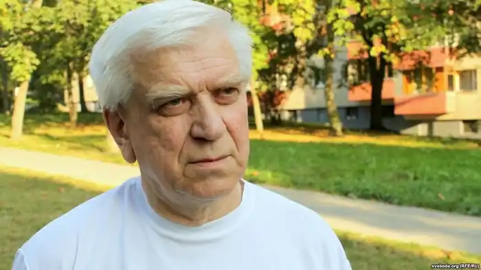

Законників Сергій Іванович (нар. 16.09.1946 р в д. Слобода Бешенковічского р-ну Вітебської обл.). Білоруський поет, перекладач, публіцист. Член Спілки письменників СРСР. Член Білоруського ПЕН-центру. Член СБП.
Перший вірш опублікував в 1963 році.
Після закінчення школи вступив на філологічний факультет БГУ ім. В.І.Леніна, після закінчення якого (1969) працював учителем білоруської мови і літератури. У 1970-1971 роках — літсотрудніком Ушачской районної газети "Патриёт", з 1972 року — секретар Ушачского райкому комсомолу. У 1975-1978 роках — завідувач відділом сільської молоді редакції газети "Чирвоная змена", а потім — кореспондент відділу літератури і мистецтва редакції газети "Звязда". З 1978 року — інструктор, в 1979-1986 роках — завідувач відділом художньої літератури відділу культури ЦК КПБ. З 1986 по2002 рік — головний редактор журналу "Полум'я". Очолював Білоруське відділення фонду слов'янської писемності. Член Спілки письменників СРСР (1977). Член Білоруського ПЕН-центру (1989). З 1990 року член Союзу білоруських письменників. Автор численних збірок поезії та публіцистики. На слова С. Законнікова написали пісні Е. Зарицький, Ю. Семеняко, Г. Смоляк. В даний час веде постійну рубрику в тижневику "Вільні новини плюс". Перекладав на білоруський окремі твори російських, українських, грузинських та литовських поетів. Твори С. Законнікова переведені на угорський, в'єтнамський, іспанська, киргизький, литовська, німецька, російська, українська і чуваська мови. нагороди: Літературна премія імені А. Кулешова (1982, за книгу "Пакуль Живе травня бяроза"); Премія Бориса Кіта (2005); Орден "Знак пошани"; орден України "За заслуги" III ступеня (2006); Почесна грамота Верховної Ради УРСР. Основні твори: Бяседа: вершити. Мн., 1973; Устань та сонца: вершити и паема. Мн., 1976; Пакуль Живе травня бяроза: вершити и паема. Мн., 1981; Віра, Надзея, любоў: кніга лірикі. Мн., 1983; Присак годині: вершити, паеми. Мн., 1986; Вічна далеко: вершити. Мн., 1987; Сутнасць: кніга паезіі. Мн., 1987; Заклінанне: кніга паезіі. Мн., 1991; Лістам дарога запала ... Мн., 2000..